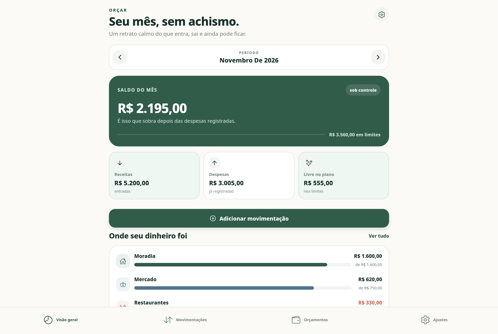

AppImage para Linux
Seu dinheiro no seu computador — e em nenhum outro lugar.
O MyFinance é um app de controle financeiro pessoal que guarda tudo no próprio disco. Sem cadastro, sem servidor próprio, sem sincronização. Um mês de cada vez, com o que entra, o que sai e o que ainda pode ficar.

O que ele faz
Cinco telas, nenhuma distração.
Visão geral do mês
Saldo, receitas, despesas, quanto sobra nos limites e a tendência dos últimos meses.
Movimentações
Receitas e despesas com valor, data, descrição e categoria — editáveis a qualquer momento.
Orçamentos por categoria
Defina um limite por categoria e acompanhe o quanto ainda cabe antes de estourar.
Importar e exportar CSV
Traga o histórico de outro lugar e leve seus dados embora quando quiser.
Tema claro e escuro
Acompanha a preferência do sistema; a escolha fica salva entre as sessões.
Funciona offline
Depois de baixado, não precisa de internet para usar. A verificação de atualizações é opcional.
Sobre e atualizações
Versão, links do projeto e uma checagem da última release que só acontece quando você pede.
Instalação
Um arquivo só. Baixe o AppImage da última versão, dê permissão de execução e abra.
chmod +x MyFinance-1.1.0-x86_64.AppImage
./MyFinance-1.1.0-x86_64.AppImage- Linux x86_64, com glibc 2.39 ou mais novo.
-
Em algumas distribuições é preciso instalar o FUSE 2 (
libfuse2/libfuse2t64). Sem ele, rode./MyFinance-1.1.0-x86_64.AppImage --appimage-extract-and-run. - O arquivo tem cerca de 121 MB e não precisa de instalação: é só executar.
Privacidade
Não existe conta, telemetria ou chamada automática para servidor. A única consulta de rede é a verificação de atualizações na aba Sobre, quando você clica; ela consulta a API pública do GitHub e não envia dados financeiros.
- Os dados ficam em
~/.config/myfinance/, no armazenamento local do próprio app. - Eles não são criptografados: quem tiver acesso à sua pasta de usuário consegue lê-los.
- Para backup completo, use o JSON em Ajustes → Backup; o CSV serve para abrir os dados em planilhas.